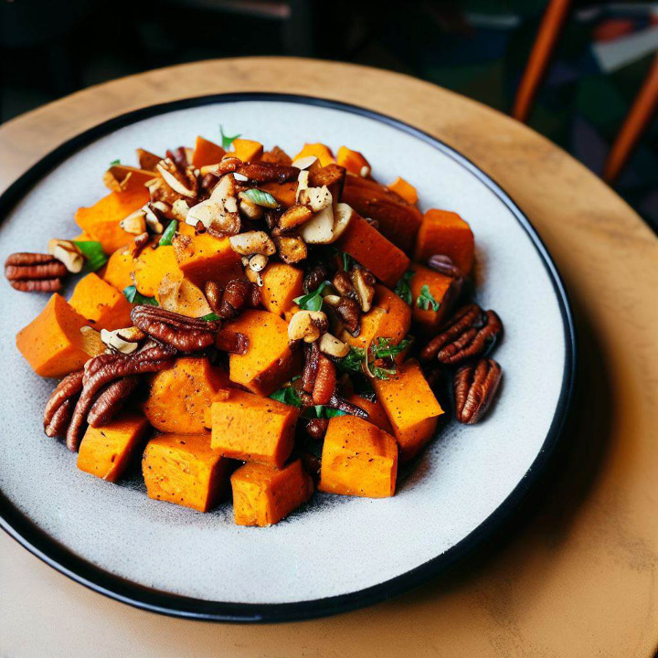

Salades
Salade de Patates Douces Rôties aux Noix de Pécan Caramélisées

Cette recette allie la douceur des patates douces rôties, le croquant des noix de pécan caramélisées et la fraîcheur des jeunes pousses.
Chaque bouchée offre un équilibre parfait entre les notes sucrées, salées et croquantes, faisant de cette salade un délice à la fois réconfortant et sain.
La simplicité de la préparation et l'utilisation d'ingrédients frais en font un choix idéal pour une entrée légère ou un accompagnement coloré lors d'un repas.
Préparation
15 min
Cuisson
30 min
Portions
4
Niveau
Facile
Calories
400 kcal
Ingrédients
- 4 patates douces de taille moyenne
- 1 ½ tasse de noix de pécan
- 8 tasses d'épinards frais
- 1 oignon rouge
- 1 ½ tasse de tomates cerises colorées
Pour la vinaigrette :
- Jus de 2 citrons frais
- ¼ de tasse d'huile d'olive extra vierge
- 2 cuillères à soupe de sirop d'érable
- 1 cuillère à soupe de moutarde de Dijon
- Sel et poivre au goût
Garnitures optionnelles :
- Copeaux de parmesan végétalien
- Graines de tournesol grillées
- Morceaux d'avocat
Ustensiles nécessaires
- Un couteau de cuisine
- Une planche à découper
- Un saladier
- Une plaque de cuisson
- Du papier sulfurisé
- Une poêle antiadhésive
- Une spatule
Préparation
- Préchauffez votre four à 200°C. Épluchez et coupez les patates douces en cubes ou en tranches. Disposez-les sur une plaque de cuisson recouverte de papier sulfurisé et assaisonnez-les avec vos épices préférées (paprika fumé, cannelle ou cumin). Enfournez et laissez rôtir jusqu'à ce qu'elles soient tendres et légèrement caramélisées (environ 25-30 minutes).
- Pendant que les patates douces cuisent, préparez les noix de pécan caramélisées. Dans une poêle à feu moyen, faites fondre un peu de sirop d'érable, puis ajoutez les noix de pécan et remuez délicatement pour les enrober. Laissez cuire pendant quelques minutes jusqu'à ce qu'elles soient dorées et caramélisées. Veillez à ne pas les faire brûler !
- Une fois que les patates douces sont cuites et légèrement refroidies, placez-les dans un grand saladier. Ajoutez les noix de pécan caramélisées, des épinards frais, des tranches d'oignon rouge finement coupées et des quartiers de tomates cerises colorées. Mélangez délicatement.
- Pour la vinaigrette, dans un petit bol, mélangez le jus de citron frais, l'huile d'olive extra vierge, le sirop d'érable, la moutarde de Dijon, une pincée de sel et de poivre. Fouettez jusqu'à obtenir une émulsion homogène.
- Au moment de servir, versez généreusement la vinaigrette sur la salade et mélangez doucement pour enrober tous les ingrédients.
- Pour sublimer davantage cette salade, ajoutez des copeaux de parmesan végétalien, des graines de tournesol grillées ou des morceaux d'avocat crémeux.
Accompagnements suggérés
- Légumes grillés : poivrons, courgettes ou aubergines assaisonnés d'herbes et d'épices.
- Falafels : pour une touche de protéines supplémentaires et une texture croquante.
- Houmous : servez avec une cuillerée de houmous pour une saveur crémeuse et complémentaire.
Bon appétit !